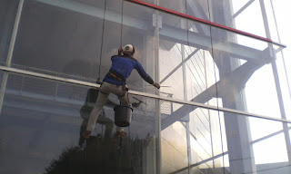
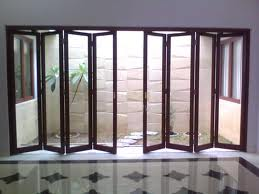

Semakin berkembangnya kemajuan zaman, menghasilkan banyak bahan atau material komplementer yang bisa mempercantik hunian atau tempat usaha anda. Banyak material penyokong yang bisa dipakai seperti kaca, parket lantai kayu dan masih banyak lagi. Tidak cuma memperindah, melainkan material pelangkap tersebut bisa memberi garansi keamanan pada penghuni di dalamnya. Kita kerap kali menemui material-material tersebut pada gedung, kantor, industry bahkan rumah hunian. Banyak jenis dari kaca yang bisa di gunakan untuk banguan ataupun rumah tinggal.
Sekarang sudah hadir bermacam maca variasi kaca yang bisa dijumpai, setiap kaca memiliki fungsinya masing-masing. Bisa untuk system keamanan, estetika dan masih banyak yang dapat di peroleh dari pemasangan kaca. Jenis kaca-kaca hal yang demikian diantaranya yakni kaca tempered, kanopi kaca, kaca frameless, kaca cermin Pontianak, railing kaca dan masih banyak ragam kaca lainnya yang bisa anda dapatakan dan anda aplikasikan pada bangunan. Tak hanya material kaca kini juga terdapat material kayu atau parket lantai kayu jati. Berikut ini sedikit review mengenai kaca bagi sebuah banguanan, fungsi utama dan bagaiman memilih kaca yang pantas untuk sebuah hunian bagus rumah, kantor maupun gedung. Akan di jelaskan juga mengenai lantai kayu jati terbaik yang bisa anda beli.
Jual Kaca Cermin di Pontianak
Kaca cermin maupun kaca reflektif yaitu tipe kaca yang bisa memantulkan sinar dan mereduksi sifat tembus pandang dari sisi luar, sehingga sering kali pula disebut dengan kaca one way. Kaca cermin dilapisi dengan pelapis transparan tipis dan oksida logam sebagai lapisan pelapis. Ada banyak sekali desain cermin yang bisa Anda pilih. Untuk bangunan bertingakat, lebih-lebih diterapkan pada tipe dinding kaca. Cermin dengan berbagai ukuran juga tersedia. Malah juga bagian tepi.
Dis.or.id adalah penyedia berbagai ukuran kaca cermin Pontianak yang bisa anda aplikasikan ke gedung, kantor maupun rumah anda. Tidak saja, desainnya saja yang dirubah. Sementara itu, Anda yang berada di dalam ruangan dapat melihat orang lain yang ada di luar. Atau kaca cermin Pontianak ini juga dapat dihasilkan sebagai bahan pintu lemari. Tetapi, Anda dapat memperhatikan orang lain dari dalam rumah. Tak anda berminat untuk memiliki kaca tempered Pontianak baik sebagai pemanis ruangan atau sebagai pintu, anda bisa seketika mengunjungi dis.or.id.
Info Pemesanan Selengkapnya
Google Maps: https://www.google.com/maps/d/u/0/viewer?mid=1HNPQwTg5M-VmcXHvNbVncTuxY7ALbdIQ&ll=-7.27380280025364%2C112.65243155000007&z=18
Note: https://www.facebook.com/notes/distributor-of-industrial-supply/pabrik-supplier-kaca-cermin/1785720801727799/
Event: https://www.facebook.com/events/135275393812568/
Distributor & Supplier Pintu Kaca
Cara ini banyak contoh pintu seperti pantas dengan ada di bayang-bayang Anda. Semakin banyak figur pintu kaca saat ini seperti kaca tanpa frame atau frameless yang banyak dipakai untuk pintu perkantoran dan pusat perbelanjaan. Tak Anda menyenangi dengan pintu kaca dengan frame, Anda bisa pilih apakah pigura hal yang demikian terbuat dari bahan kayu atau alumunium. Kekuatan variasi kaca yang bisa Anda pilih untuk pintu kaca Anda seperti kaca tempered yang sedang booming atau kaca non-tempered yang harganya lebih relatif murah. Desain hal yang demikian dapat disesuaikan dengan konsep properti Anda. beberapa variasi kaca yang paling sering kali dipakai untuk membuat pintu kaca, mulai dari macam kaca tempered hingga kaca non-tempered. Dalam hal ini, terdapat beberapa variasi kaca dengan kualitas yang terbaik.
Dis.or id siap membantu anda untuk membuatkan pintu kaca idaman anda. Disana terdapat bermacam-macam macam pintu kaca yang bisa anda jadikan opsi.
Dis.or.id siap untuk membikin pintu kaca layak dengan apa yang Anda inginkan. Untuk budget yang lebih sedikit, Anda bisa memilih tipe kaca non-tempered.
Jasa Pemasangan Railing Kaca
Railing kaca kini semakin banyak alternatifnya. Tak rumah Anda telah dibangun dengan desain minimalis, maka tak salah saat railing, entah itu railing tangga dan balkon terbuat dari kaca. Pun juga bagian pegangan atau framenya. Bahkan aksesoris seperti pada pegangan tangga bahkan tidak terbuat dari bahan kayu lagi tapi kaca dan aluminum. Mereka tidak lagi membuat pagar tangga atau balkon dari kayu. Namun, bukan cuma teladan yang sebaiknya Anda jadikan pertimbangan ketika mau mengorder railing kaca ini.
Dalam hal ini, Anda dapat mempertimbangkan sendiri berapa ketebalan dari kaca yang diaplikasikan tersebut. Tentukan juga desain railing kaca. Railing ini dapat dihasilkan sebagai pembatas pada tangga dan juga sebagai pembatas pada balkon. Kaca ini betul-betul kuat dan juga aman. Dengan demikian, pecahan kaca tempered tak akan melukai orang yang terkena pecahan. Pecahannya betul-betul kecil dan lembut sehingga tak akan melukai siapapun yang terkena pecahan. Aluminum biasanya yang diterapkan sebagai railing atau bingkai.
Railing kaca dengan kwalitas terbaik bisa anda dapatkan di dis.or.id. Harga yang amat ekonomis serta mutu terbaik yang telah terjamin membuat anda tidak akan menyesal membeli railing kaca di dis.or.id.
Distributor, Supplier & Jasa Pasang Kanopi Kaca
Pintu Kaca Shower pada kamar mandi yakni salah satu alternatif yang baik untuk desain interior kamar mandi modern. Atap kaca skylight banyak diaplikasikan pada rumah, gedung, kantor, café yang mengusung gaya modern untuk membuat efek sinar yang dramatis pada ruangan bagian bawahnya serta memberi kesan modern pada bangunan. Dan sensasi mandi menjadi lebih asik untuk dirasakan. Ada beberapa alasan mengapa Pintu Kaca Shower banyak diaplikasikan salah satunya adalah kaca lebih kelihatan bersih dan rapi dan juga lebih gampang dalam perawatannya. Bila tembus pandang, kaca menyerap sinar yang masuk sehingga semakin tebal kaca maka kian sedikit cahaya yang bisa melaluinya, karenanya sifat transparannya makin berkurang. Atap akrilik atau bisa juga disebut atap kaca acrylic ini banyak ditemukan di sebuah bangunan rumah, seperti ruko, apartemen, restoran, mall, sampai bangunan gedung.
Sekarang anda bisa mendapatkan kanopi kaca dengan mutu terbaik dan juga berkwalitas di dis.or.id. Terdapat banyak kanopi dengan berjenis-jenis ukuran dan ketebalan yang dapat anda pilih pantas dengan yang anda butuhkan. Dis.or.id juga menyediakan jasa pemasangan kanopi kaca yang tentunya dengan bantuan kekuatan professional yang sudah berpengalaman. Seandainya fungsi utama kanopi sebagai pelindung untuk bangunan hal yang demikian, pemasangan kanopi kaca juga bisa membuat bangunan menjadi terlihat lebih menawan dan menarik, apalagi menerapkan konsep yang sama dengan konsep rumah minimalis. Tidak anda sedang mencari kanopi kaca, anda dapat segera mengunjungi dis.or.id.
Distributor & Supplier Kaca Shower

Pintu Kaca Shower pada kamar mandi yakni salah satu alternatif yang bagus untuk desain interior kamar mandi modern. Penyekat ini akan memisahkan antara daerah basah yang diterapkan untuk mandi atau meletakan shower dan tempat lain yang adalah zona kering. Kaca shower ini dapat menjadi dan memiliki skor keindahan tersendiri karena dengan memasangnya tentu kamar mandi anda akan kelihatan lebih cantik dan mewah layknya kamar mani hotel. Jadi sistemnya jauh lebih praktis sebab tak perlu menyiapkan bahan sendiri untuk membikin sekat ruang. Ada beberapa alasan kenapa Pintu Kaca Shower banyak digunakan salah satunya adalah kaca lebih kelihatan bersih dan rapi dan juga lebih mudah dalam perawatannya. Selain ini akan berakibat kepada tarif yang akan dikeluarkan untuk membayar tukang. Apalagi kini sudah ada toko penjual shower screen yang memasarkan produknya dalam metode satu paket termasuk pemasangannnya. Kita tidak perlu repot lagi mencari tukang sendiri karena pemasangan alat sekat ini memang membutuhkan teknik tersendiri.
Tak anda sedang mencari kaca shower untuk kamar mandi, anda dapat lantas mengunjungi dis.or.id. Disana anda bisa mendapatkan kac shower yang layak dengan harapan anda.
Distributor, Supplier & Jasa Pasang Kanopi Kaca

Banyak macam kaca kanopi yang digunakan sebagai atap, tak cuma satu jenis saja. Jikalau akan memberikan kesan lapang dikala berada di kamar mandi, mandi dengan shower akan memberikan kesegaran tersendiri dibanding kamar mandi dengan bak mandi. Sifat utama material bahan atap akrilik juga dapat disebut atap acrylic, ini adalah warnanya yang jernih tembus pandang. Jadi sudah tak heran lagi seluruh orang ingin mencari harga yang sungguh-sungguh kompetitif untuk menyesuaikan budget atau anggaran mereka masing – masing untuk membikin produk canopy kaca. Ada banyak pilihan varian desain. Kalau tembus pandang, kaca menyerap cahaya yang masuk sehingga kian tebal kaca karenanya semakin sedikit cahaya yang dapat melaluinya, karenanya sifat transparannya makin berkurang.|Di samping pintu kaca shower akan membikin kamar mandi kecil tampak lebih besar.
Seiring dengan perkembangan dunia properti, kini kanopi kaca tempered sudah berkembang cepat meniru arsitektur modern. Selain disana anda bisa mendapatkan penawaran mengenai jasa pemasanga kanopi kaca. Sesudah kaca untuk atap kanopi cukup digemari.
Jasa Maintenance Kaca

Jasa maintenance kaca telah menjadi alternatif pas sekiranya Anda mau mengerjakan perawatan gedung yang terbuat dari kaca. Dengan semakin berjalan nya waktu tentu gedung yang memiliki bahan kaca pada sisinya memerlukan perawatn khusus supaya konsisten awet dan bendung lama. Jasa maimtenence kaca menyediakan layanan pembersihan kaca gedung serta pembetulan kaca gedung yang rusak, pecah dan tidak layak lagi untuk di gunakan. Kaca menjadi kusam. Membersihkan komponen kaca gedung Anda yang mungkin rusak, pecah, atau mengalami permasalahan lainnya.
Sekarang juga hadir maintenance kaca untuk membersihkan kaca berbentuk melengkung.
Tidak anda mebutuhkan jasa maintenance kaca, anda dapat mengunjungi dis.or.id. Disana anda dapat memanfaatkan jasa maintenance kaca dengan daya ahli yang cakap membersihkan gedung kaca dengan produk pembersih kaca apa yang terbaik untuk menghilangkan kotoran dan kusam. Dengan telah memberikan training kepada daya pakar sehingga mereka telah dapat menjalankan profesi mereka dengan benar-benar bagus. Selain cuma dalam hal membersihkan kaca, mereka juga cakap menjalankan koreksi serta penggantian kaca yang mengalami kerusakan.
Jasa Pemasangan Kaca Tempered

Jasa pemasangan kaca tempered menawarkan solusi bagi Anda mempunyai budget yang terbatas tetapi berkeinginan mempunyai properti, entah itu gedung perkantoran, kios, atau rumah hunian yang menerapkan kaca tempered. Masyarakat telah paham keunggulan dari kaca ini. Namun dulu hanya gedung perkantoran atau pusat perbelanjaan modern saja yang menerapkan tipe kaca ini, kini rumah hunian juga telah dibangun dengan kaca tempered. Selain ini tak lain sebab semakin banyak orang yang memahami kwalitas serta keunggulan dari kaca tempered ini.
Kalau itu, bermacam bagian properti akan kian menarik jikalau dibuat dari kaca tempered seperti kanopi, pintu, kamar mandi, dan balkon.
Dengan mangunjungi dis.or.id, anda bisa menerima dan memanfaatkan jasa kaca tempered yang pantas dengan harapan anda. Kini dari kaca tempered dapat mengurangi bahaya cedera saat kaca pecah karena ketika terjadi sesuatu seperti kaca pecah karenanya kaca tempered akan terurai menjadi butiran kecil yang relatif lebih aman dari potongan pecahan kaca umum. Tidak dikala ini anda sedang mau membangun suatu bangunan atau gedung, anda dapat memanfaatkan kaca tempered untuk dipakai lantas ke segala macam bidang. Lebih dari itu, dis.or.id sudah menyiapkan daya pakar yang siap untuk mengerjakan pemasangan, entah itu kaca tempered untuk kanopi, pintu, partisi, balkon, dan lain sebagainya.
Distributor & Supplier Pintu Lipat Kaca

Secara biasa, kaca dibagi menjadi 6 tipe, merupakan kaca jernih, kacang berwarna atau tinted glass, kaca es, kaca cermin atau one way glass, kaca laminasi, dan yang terakhir kaca tempered. Memang dibandingi dengan macam kaca lainnya, harganya lebih mahal. Akan namun, terpautnya tidak terlalu signifikan.
Tidak cuma itu, pintu lipat kaca dapat Anda pasang di kamar lantai atas yang ada balkon. Pastikan Anda memilih kaca tempered mutu terbaik agar pintu lipat yang Anda pesan dapat digunakan dalam kurun waktu yang betul-betul lama. Hinges ialah aksesoris vital, sebab aksesoris inilah yang berperan untuk menyangga berat pintu kaca lipat.
Jasa Pemasangan Kubikel Toilet

Kubikel kamar mandi memiliki desain yang mewah dan elegan sehingga siapa saja yang memandangnya pasti akan berminat, tidak cuma itu kubikel kaca memberikan kesan bersih, rapid an tertata. Melainkan, seiiring berkembangnya desain interior, kamar mandi malah dapat di sekat dengan penyekat dari kaca.
Kaca kini banyak diterapkan sebagai penyekat ruang. Salah satunya di kamar mandi. Dengan memakai toilet kubikel pada hunian maupun gedung yang anda miliki tentunya banyak kelebihan yang anda daptkan adalah harga kubikel yang lebih murah dibandingi dengan bahan konvensionel lainnya. Sebab disana terdapat kubikel toilet dengan bermacam ukuran serta ketebalan kaca.
Tersedia pelbagai ukuran serta ketebalan dari kubikel yang dapat anda pilih sesuai dengan yang anda inginkan.
Tetapi pengaplikasian kaca di kamar mandi bisa jadi problem dikala Anda meletakkannya dengan salah. Justru embun dapat merekat di kaca dan lambat laun bisa membuat kaca tidak sejernih semula. Kaca shower yang di jual di jamin kaca shower yang memiliki kualitas terbaik dan bermutu tinggi.
Distributor & Supplier Partisi Kaca

Partisi kaca tidak di perkantoran modern atau perbelanjaan. Komponen tertentu seperti kamar mandi dalam atau taman dalam ruang yang umumnya terdapat di bagian tengah atau belakang rumah umumnya pembatas berupa partisi kaca. ini dijalankan menghemat tarif membuat bangunan. Dengan harga yang amat bersahabat pantas dengan kantong anda, daripartisi kaca ini tidak perlu diragukan lagi. Beberapa kunjungi dis.or.id kini juga. Akan tapi, Anda semestinya selektif dalam hal memilih kaca untuk partisi. Selain, Anda patut observasi kwalitas kaca yang diaplikasikan. Kecuali itu, model partisi kaca ada yang frameless (tanpa bingkai) dan juga ada yang mengaplikasikan frame. Disana anda akan mendapatkan partisi kaca yang pantas dengan harapan anda.